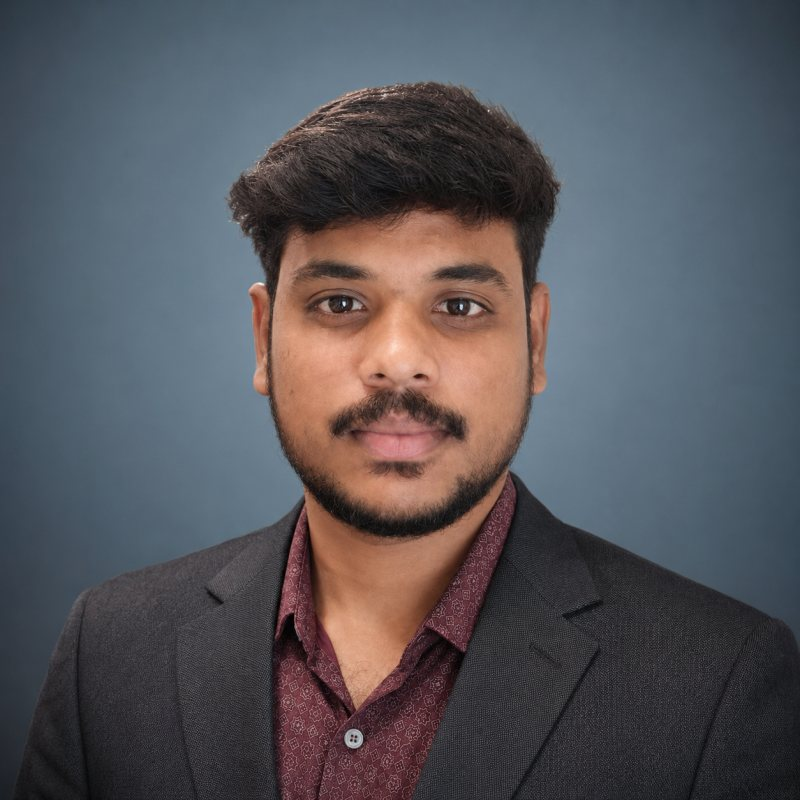

Cloud platforms
Microsoft Azure
Senior DevOps Engineer with 5+ years of experience running production Kubernetes platforms for Nokia and Chubb Insurance. From Terraform and GitOps to an AI agent that troubleshoots Kubernetes.

My skills grouped the way I use them on a platform team. Pick a group to focus it.
Four illustrative diagrams of how requests, packages and releases travel through the platforms I run. Pick a view, then click a step.
Recent work applying LLMs to day-to-day platform operations: troubleshooting, cost visibility and knowledge retrieval.
An AI-powered assistant built with Cursor AI, LLMs and MCP server integrations to support Kubernetes troubleshooting and cloud cost optimisation.
A Python pipeline that extracts and chunks technical runbooks and PDFs, generates embeddings and indexes the knowledge in ChromaDB for context-aware retrieval.
A PoC that pulls in relevant chat history and technical knowledge to improve the accuracy of the assistant’s answers.
Example text written for this page, not output from a real cluster.
Two roles, both running Kubernetes for enterprise clients.
Running production AKS platforms and turning operational procedures into reusable automation.
Kubernetes platform support, CI/CD and Linux automation for an insurance client.
Hands-on expertise backed by industry certifications and training.
CKA · 2026
AZ-900 · 2026
Training · 2024
I’m open to DevOps, cloud infrastructure and Kubernetes-focused roles where I can build, automate and help teams ship with confidence.